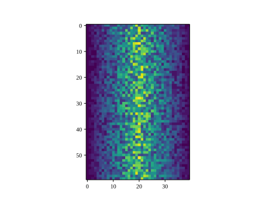
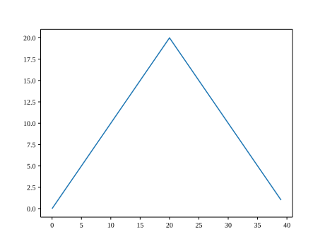
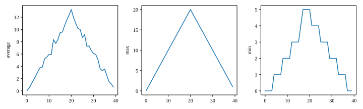

Visualizing Tabular Data
- Plot simple graphs from data.
- Plot multiple graphs in a single figure.
- How can I visualize tabular data in Python?
- How can I group several plots together?
Visualizing data
The mathematician Richard Hamming once said, “The purpose of computing is insight, not numbers,” and the best way to develop insight is often to visualize data. Visualization deserves an entire lecture of its own, but we can explore a few features of Python’s matplotlib library here. While there is no official plotting library, matplotlib is the de facto standard. First, we will import the pyplot module from matplotlib and use two of its functions to create and display a heat map of our data:
Episode Prerequisites
If you are continuing in the same notebook from the previous episode, you already have a data variable and have imported numpy. If you are starting a new notebook at this point, you need the following two lines:
import numpy
data = numpy.loadtxt(fname='inflammation-01.csv', delimiter=',')import matplotlib.pyplot
image = matplotlib.pyplot.imshow(data)
matplotlib.pyplot.show()
Each row in the heat map corresponds to a patient in the clinical trial dataset, and each column corresponds to a day in the dataset. Blue pixels in this heat map represent low values, while yellow pixels represent high values. As we can see, the general number of inflammation flare-ups for the patients rises and falls over a 40-day period.
So far so good as this is in line with our knowledge of the clinical trial and Dr. Maverick’s claims:
- the patients take their medication once their inflammation flare-ups begin
- it takes around 3 weeks for the medication to take effect and begin reducing flare-ups
- and flare-ups appear to drop to zero by the end of the clinical trial.
Now let’s take a look at the average inflammation over time:
ave_inflammation = numpy.mean(data, axis=0)
ave_plot = matplotlib.pyplot.plot(ave_inflammation)
matplotlib.pyplot.show()
Here, we have put the average inflammation per day across all patients in the variable ave_inflammation, then asked matplotlib.pyplot to create and display a line graph of those values. The result is a reasonably linear rise and fall, in line with Dr. Maverick’s claim that the medication takes 3 weeks to take effect. But a good data scientist doesn’t just consider the average of a dataset, so let’s have a look at two other statistics:
max_plot = matplotlib.pyplot.plot(numpy.amax(data, axis=0))
matplotlib.pyplot.show()
min_plot = matplotlib.pyplot.plot(numpy.amin(data, axis=0))
matplotlib.pyplot.show()
The maximum value rises and falls linearly, while the minimum seems to be a step function. Neither trend seems particularly likely, so either there’s a mistake in our calculations or something is wrong with our data. This insight would have been difficult to reach by examining the numbers themselves without visualization tools.
Grouping plots
You can group similar plots in a single figure using subplots. This script below uses a number of new commands. The function matplotlib.pyplot.figure() creates a space into which we will place all of our plots. The parameter figsize tells Python how big to make this space. Each subplot is placed into the figure using its add_subplot method. The add_subplot method takes 3 parameters. The first denotes how many total rows of subplots there are, the second parameter refers to the total number of subplot columns, and the final parameter denotes which subplot your variable is referencing (left-to-right, top-to-bottom). Each subplot is stored in a different variable (axes1, axes2, axes3). Once a subplot is created, the axes can be titled using the set_xlabel() command (or set_ylabel()). Here are our three plots side by side:
import numpy
import matplotlib.pyplot
data = numpy.loadtxt(fname='inflammation-01.csv', delimiter=',')
fig = matplotlib.pyplot.figure(figsize=(10.0, 3.0))
axes1 = fig.add_subplot(1, 3, 1)
axes2 = fig.add_subplot(1, 3, 2)
axes3 = fig.add_subplot(1, 3, 3)
axes1.set_ylabel('average')
axes1.plot(numpy.mean(data, axis=0))
axes2.set_ylabel('max')
axes2.plot(numpy.amax(data, axis=0))
axes3.set_ylabel('min')
axes3.plot(numpy.amin(data, axis=0))
fig.tight_layout()
matplotlib.pyplot.savefig('inflammation.png')
matplotlib.pyplot.show()
The call to loadtxt reads our data, and the rest of the program tells the plotting library how large we want the figure to be, that we’re creating three subplots, what to draw for each one, and that we want a tight layout. (If we leave out that call to fig.tight_layout(), the graphs will actually be squeezed together more closely.)
The call to savefig stores the plot as a graphics file. This can be a convenient way to store your plots for use in other documents, web pages etc. The graphics format is automatically determined by Matplotlib from the file name ending we specify; here PNG from ‘inflammation.png’. Matplotlib supports many different graphics formats, including SVG, PDF, and JPEG.
Plot Scaling
Why do all of our plots stop just short of the upper end of our graph?
Solution (Solution). Because matplotlib normally sets x and y axes limits to the min and max of our data (depending on data range)
If we want to change this, we can use the set_ylim(min, max) method of each ‘axes’, for example:
axes3.set_ylim(0, 6)Update your plotting code to automatically set a more appropriate scale. (Hint: you can make use of the max and min methods to help.)
Solution (Solution).
# One method
axes3.set_ylabel('min')
axes3.plot(numpy.amin(data, axis=0))
axes3.set_ylim(0, 6)Solution (Solution).
# A more automated approach
min_data = numpy.amin(data, axis=0)
axes3.set_ylabel('min')
axes3.plot(min_data)
axes3.set_ylim(numpy.amin(min_data), numpy.amax(min_data) * 1.1)Drawing Straight Lines
In the center and right subplots above, we expect all lines to look like step functions because non-integer values are not realistic for the minimum and maximum values. However, you can see that the lines are not always vertical or horizontal, and in particular the step function in the subplot on the right looks slanted. Why is this?
Solution (Solution). Because matplotlib interpolates (draws a straight line) between the points. One way to do avoid this is to use the Matplotlib drawstyle option:
import numpy
import matplotlib.pyplot
data = numpy.loadtxt(fname='inflammation-01.csv', delimiter=',')
fig = matplotlib.pyplot.figure(figsize=(10.0, 3.0))
axes1 = fig.add_subplot(1, 3, 1)
axes2 = fig.add_subplot(1, 3, 2)
axes3 = fig.add_subplot(1, 3, 3)
axes1.set_ylabel('average')
axes1.plot(numpy.mean(data, axis=0), drawstyle='steps-mid')
axes2.set_ylabel('max')
axes2.plot(numpy.amax(data, axis=0), drawstyle='steps-mid')
axes3.set_ylabel('min')
axes3.plot(numpy.amin(data, axis=0), drawstyle='steps-mid')
fig.tight_layout()
matplotlib.pyplot.show()
Make Your Own Plot
Create a plot showing the standard deviation (numpy.std) of the inflammation data for each day across all patients.
Solution (Solution).
std_plot = matplotlib.pyplot.plot(numpy.std(data, axis=0))
matplotlib.pyplot.show()Moving Plots Around
Modify the program to display the three plots on top of one another instead of side by side.
Solution (Solution).
import numpy
import matplotlib.pyplot
data = numpy.loadtxt(fname='inflammation-01.csv', delimiter=',')
# change figsize (swap width and height)
fig = matplotlib.pyplot.figure(figsize=(3.0, 10.0))
# change add_subplot (swap first two parameters)
axes1 = fig.add_subplot(3, 1, 1)
axes2 = fig.add_subplot(3, 1, 2)
axes3 = fig.add_subplot(3, 1, 3)
axes1.set_ylabel('average')
axes1.plot(numpy.mean(data, axis=0))
axes2.set_ylabel('max')
axes2.plot(numpy.amax(data, axis=0))
axes3.set_ylabel('min')
axes3.plot(numpy.amin(data, axis=0))
fig.tight_layout()
matplotlib.pyplot.show()- Use the
pyplotmodule from thematplotliblibrary for creating simple visualizations.